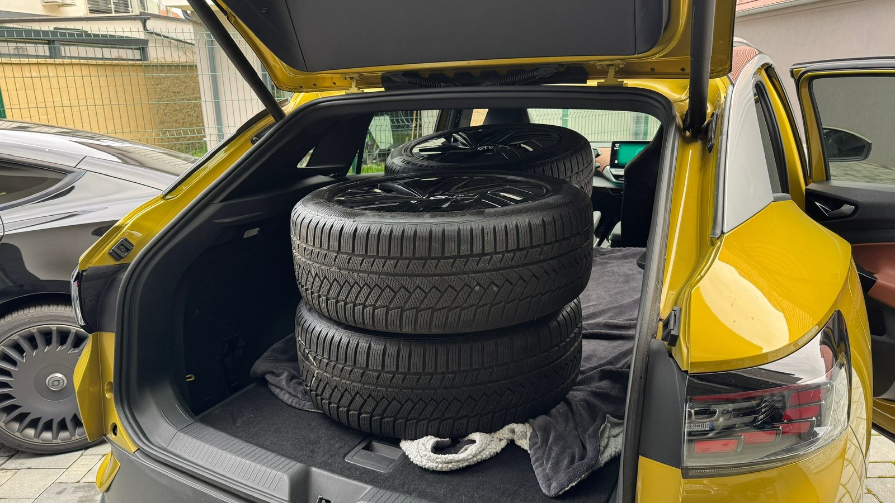
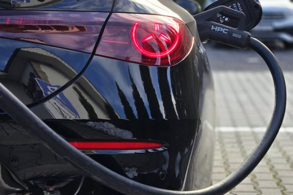
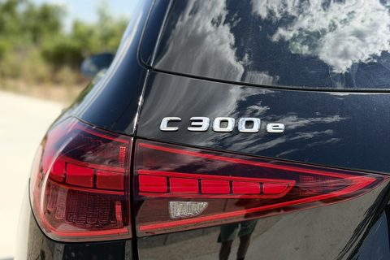

Čo odpadá
- výmena motorového oleja a olejového filtra,
- palivový a vzduchový filter motora,
- zapaľovacie sviečky,
- rozvodový remeň alebo reťaz,
- spojka a dvojhmotový zotrvačník,
- výfuk, katalyzátor a filter pevných častíc,
- emisná kontrola,
- ...a mnoho iných úkonov.
Práve tieto položky tvoria pri spaľovacích autách veľkú časť nákladov na servis, najmä po skončení záruky.
Čo zostáva
Elektromobil má stále bežné časti auta, ktoré treba kontrolovať a meniť:
- Peľový filter kabíny, spravidla raz ročne.
- Brzdová kvapalina, zvyčajne každé dva roky.
- Chladiaca kvapalina okruhu batérie a elektroniky, v intervaloch podľa výrobcu, často po mnohých rokoch.
- Kvapalina do ostrekovačov, stierače, žiarovky a podvozok ako pri každom aute.
- 12 V batéria. Elektromobil má okrem trakčnej batérie aj malú 12 V batériu, ktorá napája riadiace jednotky. Keď odíde, auto sa nezapne, aj keď je veľká batéria plná.
Servisné intervaly sa líšia podľa značky. Zvyčajne elektromobily chodia na prehliadku raz za rok alebo dva, prípadne po stanovenom počte kilometrov. Tesla predpísaný interval nemá.
Na čo si dať pozor
Brzdy
Väčšinu brzdenia obstará rekuperácia, preto sa brzdové platničky a kotúče opotrebúvajú pomalšie. Problém je opačný: kotúče, ktoré sa málo používajú, hrdzavejú. Občas preto zabrzdite poriadne, napríklad pri zjazde z diaľnice, aby sa kotúče očistili. Dbajte pritom na bezpečnosť seba aj svojho okolia.
Pneumatiky
Elektromobil je ťažší a má okamžitý nástup krútiaceho momentu. Pneumatiky sa preto opotrebúvajú rýchlejšie, najmä pri ostrom rozbiehaní. Pri výmene sa oplatí voliť pneumatiky s vyššou nosnosťou, prípadne modely určené pre elektromobily, ktoré bývajú tichšie a s nižším valivým odporom.
Geometria
Kvôli hmotnosti auta sa oplatí kontrolovať geometriu častejšie, nerovnomerné opotrebovanie pneumatík je drahšie než jej nastavenie.
Kam na servis
Na bežnú údržbu, pneumatiky, brzdy a podvozok stačí akýkoľvek servis, ktorý vie pracovať s elektromobilmi. Na práce na vysokonapäťovej časti, teda na batérii, elektromotore a výkonovej elektronike, je potrebný servis so zaškolenými technikmi a vybavením. Počas záruky choďte do autorizovaného servisu.
Pri autách dovezených zo zahraničia platí záruka výrobcu spravidla v celej EÚ, takže záručný servis urobí autorizovaný servis značky aj na Slovensku.
Technická kontrola
Nové auto ide na prvú technickú kontrolu po štyroch rokoch, potom každé dva roky. Elektromobil emisnú kontrolu nerobí.
Časté otázky
Je servis elektromobilu lacnejší?
Pravidelná údržba áno. Odpadá olej, filtre motora, sviečky, rozvody aj spojka a brzdy vydržia dlhšie. Počítajte však s rýchlejším opotrebovaním pneumatík a s tým, že opravy vysokonapäťových častí robí len špecializovaný servis.
Ako často ide elektromobil na servis?
Podľa značky spravidla raz za rok alebo dva, prípadne po stanovenom počte kilometrov. Presný interval je v servisnej knižke alebo v aplikácii auta. Tesla nepredpisuje žiadny servisný interval.
Robí elektromobil emisnú kontrolu?
Nie. Auto s výlučne elektrickým pohonom emisnú kontrolu nerobí, technickú kontrolu áno.
Koľko ušetríte na prevádzke?
Nástroj porovná ročné náklady elektromobilu a spaľovacieho auta vrátane energie, servisu a poistenia podľa vášho nájazdu.

Ako sa starať o batériuDo koľkých percent nabíjať, rýchlonabíjanie a ako zistiť stav batérie. Koľko stojí jazda na elektrinuCena 100 km doma, v práci a na rýchlonabíjačke v porovnaní s benzínom.
Koľko stojí jazda na elektrinuCena 100 km doma, v práci a na rýchlonabíjačke v porovnaní s benzínom.
Hybrid, plug-in, alebo elektro?Rozdiely medzi typmi pohonu a ktorý sa hodí na akú jazdu.